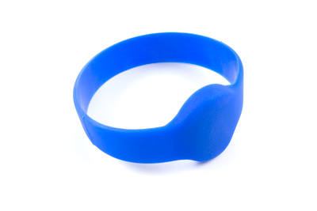

RFID Read-Write
Product Features
Read and write to RFID tags up to 6cm away. Supports EM4100 series, ISO11785 FDX-B and our own PhidgetTag protocols. Writes to T5577 tags.
Product Description
The RFID Read-Write reads RFID tags that are brought in close proximity to the reader and returns the tag identification number. Writing data to T5577 tags is also supported.
RFID (radio frequency identification) systems use data strings stored inside RFID tags to uniquely identify people or objects when their tags are scanned by an RFID reader. These types of systems are found in many applications such as passport protection, animal identification, inventory control systems, and secure access control systems.
The RFID Read-Write supports reading and writing in 3 protocols; EM4100, ISO11785 FDX-B, and PhidgetTag. The PhidgetTag protocol simply stores up to 24 ASCII characters to the tag, eliminating the necessity for a table of corresponding tag numbers and names in your program. Phidgets sells EM4100 read-only tags that can be read with either of our RFID readers, and writable tags which can be written with the 1024 using any protocol. Any 3rd-party EM4100 or ISO11785 tags can be read.
Because passive tags require a strong RF field to operate, their effective range is limited to an area in close proximity to the RFID reader. The distance over which the RFID tag is usable is affected by such things as the tag shape and size, materials being used in the area near the reader, and the orientation of the reader and tag in respect to each other and in their operating environment. The smaller a tag, the closer it must be to the reader to operate.
The 1024 has two digital outputs, labeled "+5V" and "LED". These work the same as any other Phidgets Inc. digital output, except that the "+5V" output has a higher current rating. You can use these outputs to have an LED or buzzer to indicate when a tag read has occured.
RFID Tag - Credit Card Sized
Product Features
A credit card sized EM4102 RFID tag. Fits in standard wallets.
Product Description
This basic RFID Tag is used mostly as an identity card. The card comes with a 40-bit unique ID and cannot be re-programmed. This is a slightly flexible, blank, white card with a gloss finish.
RFID Tag - PVC Key Fob White
Product Features
A white PVC key fob RFID tag. Uses EM4102 protocol.
Product Description
This durable plastic RFID tag can be used as a key fob or fastened onto any surface using it's finished through hole. The tag contains a unique ID that can be read by the RFID reader at a distance of 7cm or less.
RFID Tag - ABS Key Fob Blue
Product Features
A white ABS key fob RFID tag. Uses EM4102 protocol.
Product Description
This durable plastic RFID tag can be used as a key fob or fastened onto any surface using it's finished through hole. The tag contains a unique ID that can be read by the RFID reader at a distance of 7cm or less.
RFID Tag - Clothing Button
Product Features
An RFID tag embedded in a button ideal for tracking clothing inventory. Uses EM4102 protocol.
Product Description
This hard plastic RFID tag is shaped like a clothing button and can be sewn onto any fabric using the two through holes in the RFID tag. The tag contains a unique ID that can be read by the RFID reader at a distance of 6cm or less.
RFID Tag - Clothing Button
Product Features
A special RFID tag that can even be read when it is in close proximity to metal. If you want to use a tag on metal this is it. Uses EM4102 protocol.
Product Description
This hard plastic RFID tag is shaped like a clothing button and can be sewn onto any fabric using the two through holes in the RFID tag. The tag contains a unique ID that can be read by the RFID reader at a distance of 5cm or less.
RFID Tag - Watch with Adjustable Strap
Product Features
An RFID tag on an adjustable wristband. For when you need to keep track of lots of people. Uses EM4102 protocol.
Product Description
This hard plastic RFID tag is shaped like a clothing button and can be sewn onto any fabric using the two through holes in the RFID tag. The tag contains a unique ID that can be read by the RFID reader at a distance of 8cm or less.
RFID Tag - Watch-like with Elastic Strap

Product Features
An RFID tag on an elastic wristband. For when you need to keep track of lots of people. Uses EM4102 protocol.
Product Description
This hard plastic RFID tag is shaped like a clothing button and can be sewn onto any fabric using the two through holes in the RFID tag. The tag contains a unique ID that can be read by the RFID reader at a distance of 8cm or less.
We Provide:
- To be accessible, friendly, and helpful at all times.
- To answer the phone when you call, 24/7/365.
- Reply to your emails and support tickets within 24 hours.
- To provide timely information about new hardware.
- To provide all design documentations.
Please fulfill following request form to get more information!